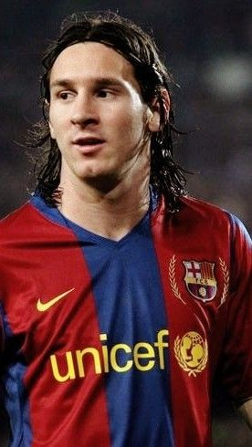
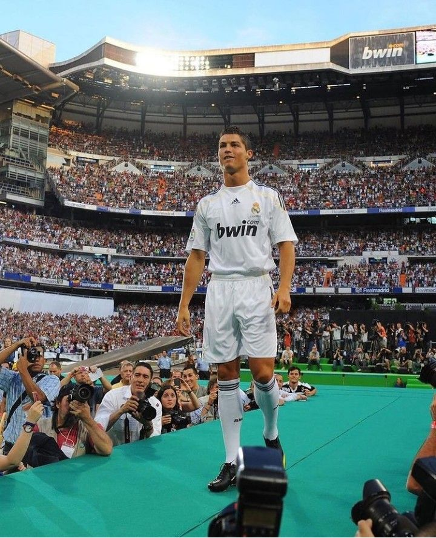
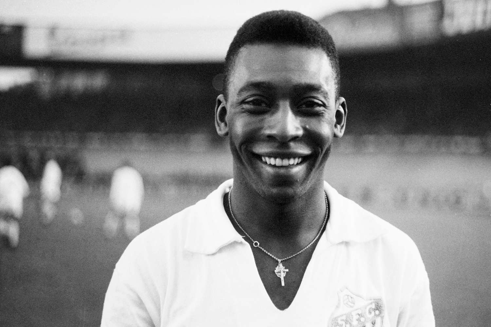

Ici c'est le panthéon du Soccer littéralement ! Des légendes qui nous ont fait vibré de par leur magie, mais également leur travail acharné tout au long de leur carrière. Parmi eux voici les plus mythiques :
Lionel Messi
Né en 1987 en Argentine, Lionel Messi est souvent considéré comme le meilleur joueur de tous les temps. Connu pour sa précision, sa créativité et son intelligence de jeu, il a passé la majeure partie de sa carrière au FC Barcelone avant de rejoindre le Paris Saint-Germain puis l"Inter Miami.
Palmarès :
- 8 Ballons dOr
- 4 Ligues des Champions
- 10 Championnats d'Espagne
- 1 Coupe du Monde (2022)
Cristiano Ronaldo
Né en 1985 au Portugal, Cristiano Ronaldo est une machine à marquer. Son professionnalisme, sa puissance physique et son mental en font une légende vivante. Il a brillé à Manchester United, au Real Madrid, à la Juventus et maintenant à Al-Nassr.
Palmarès :
- 5 Ballons d'Or
- 5 Ligues des Champions
- 7 Championnats Nationaux
- 1 Euro (2016)
Pelé
Edson Arantes do Nascimento, dit Pelé, est une légende brésilienne née en 1940. Il a révolutionné le football moderne par son style, sa technique et sa capacité à marquer dans toutes les situations. Il reste un symbole mondial du sport roi.
Palmarès :
- 3 Coupes du Monde (1958, 1962, 1970)
- Plus de 1000 buts officiels
- 6 Championnats du Brésil
Johan Cruyff

Né en 1947 aux Pays-Bas, Johan Cruyff est l'incarnation du “football total”. Joueur emblématique de l'Ajax Amsterdam et du FC Barcelone, il a ensuite révolutionné le jeu en tant qu'entraîneur. Son influence se ressent encore aujourd'hui dans le football moderne.
Palmarès :
- 3 Ballons d'Or
- 3 Coupes d'Europe des Clubs Champions
- 9 Championnats des Pays-Bas